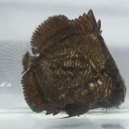
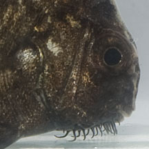
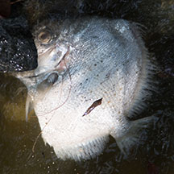
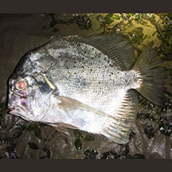

|
|
| fishes text index | photo index |
| Phylum Chordata > Subphylum Vertebrate > fishes |
| Sicklefish Drepane sp. Family Drepaneidae updated Sep 2020 Where seen? A juvenile was seen once at Tanah Merah. Adults sometimes seen dead in mass fish death events or trapped in abandoned fish nets. Features: Adults usually 25cm, to 45cm long. Flat rhomboid body silvery. Juvenile brown with a 'beard' under the chin. Sometimes confused: Juveniles may be mistaken for Brown sweetlips. |
|
 Juvenile. Tanah Merah, Aug 13 |
 |
 Spotted sicklefish (Drepane punctata) Adults were among those seen during a mass fish death event. Sungei Buloh Wetland Reserve, Mar 15 |
| What does it eat? It eats bottom
dwelling animals. Human uses: It is sometimes sold fresh in local markets. |
| Sicklefishes on Singapore shores |
On wildsingapore
flickr
|
| Other sightings on Singapore shores |
 Spotted sicklefish (Drepane punctata) Adults removed from fish net Chek Jawa, May 16 Photo shared by Ivan Kwan on flickr. |
| Acknoweldgement Grateful thanks to Kelvin Lim K. P. for identifiying this fish. Links
|